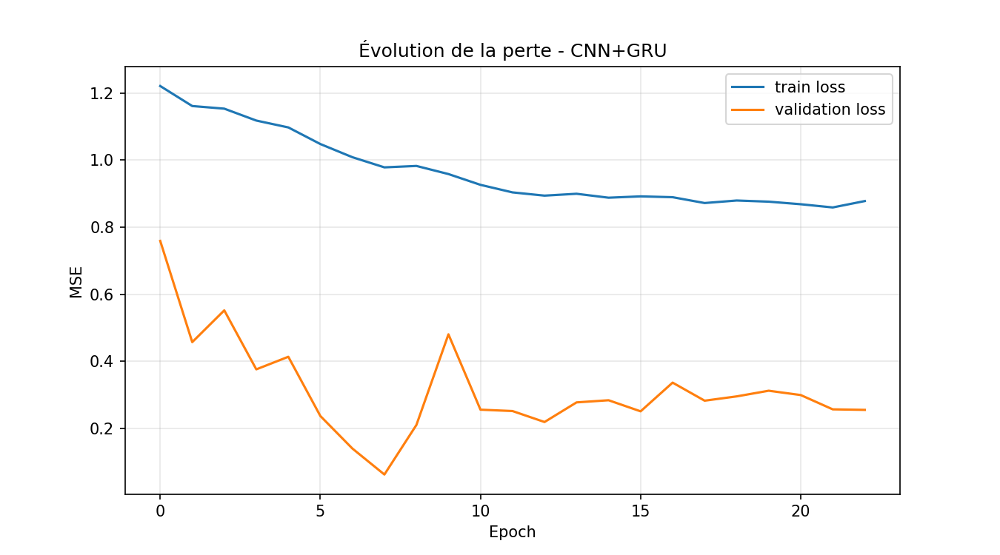
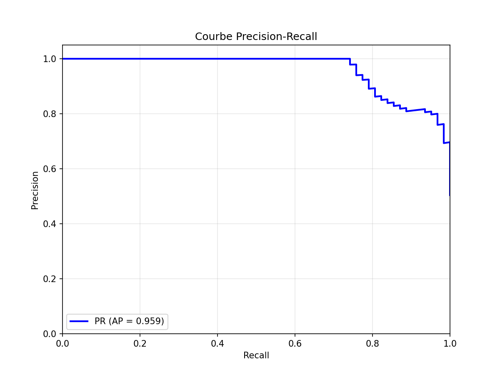
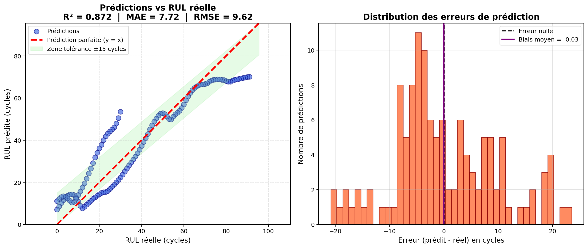

Étude de cas : Prédiction de la durée de vie restante (RUL) des batteries lithium-ion
Mini-projet – Maintenance prédictive
Auteur : Noujoud
Date : Mars 2026
Table des matières
- 1. Introduction
- 2. Présentation du dataset
- 3. Analyse FMDS Classique
- 4. Méthodologie – CNN+GRU
- 5. Résultats – Performances de régression
- 6. Résultats – Performances probabilistes et calibration
- 7. Comparaison des modèles
- 8. Prédictions individuelles par batterie
- 9. Limites et améliorations possibles
- 10. Conclusion et perspectives
- Références
1. Introduction
Les batteries lithium-ion sont essentielles aux véhicules électriques, au stockage d’énergie renouvelable et aux systèmes critiques. Leur dégradation imprévisible provoque pannes coûteuses et risques de sécurité. La prédiction précise de la Remaining Useful Life (RUL) permet une maintenance prédictive efficace et une meilleure sécurité.
→ Plus de détails sur l’importance des batteries Li-ion
Dataset : NASA Randomized Battery Usage Data Set (PCoE, 2014) – cellules 18650 LiCoO₂ avec profils de courant randomisés (RW1 à RW28).
Tâche principale : Régression RUL + classification binaire (RUL ≤ 30 cycles ? – seuil choisi car il correspond approximativement à ~10–15% de la vie restante moyenne, point critique pour planifier une maintenance proactive).
Métriques clés : RMSE, MAE, PHM score (2008 challenge), Brier score, courbes ROC/PR/calibration.
2. Présentation du dataset
- Dataset source : NASA Randomized Battery Usage Data Set (Random Walk – profils de courant aléatoires simulant usage réel)
- Nombre de cellules analysées : 28 (RW1 à RW28, 18650 LiCoO₂, capacité nominale ~2.1 Ah)
- Seuil de fin de vie (EOL) : 70 % de la capacité initiale (~30–40% de perte)
- Conversion cycles → heures : calculée via durée moyenne récente par cellule (variable selon profil RW)
Lien officiel NASA : NASA PCoE – Randomized Battery Usage
Téléchargez les fichiers de données du projet :
↓ metadata.csv (métadonnées NASA PCoE) ↓ RUL_predictions (CNN+GRU)Liens directs GitHub – Cliquez pour télécharger.
3. Analyse FMDS Classique
Avant toute approche de maintenance prédictive par apprentissage profond, une analyse de fiabilité classique (FMDS) est réalisée sur les données réelles de dégradation :
- Visualisation de la dégradation du State of Health (SOH)
- Estimation non-paramétrique de la survie via Kaplan-Meier
- Ajustement paramétrique de la loi de Weibull + densité de probabilité
- Analyse du taux de risque (Hazard Rate)
- Courbe Bathtub (défaillances précoces / vie normale / usure)
- Indicateurs quantitatifs : MTBF, MTTR, taux de défaillance/réparation, disponibilité

Figure 3.1 : Dégradation du State of Health (SOH) pour les 28 batteries
Remarque : Forte variabilité entre batteries, chutes parfois brutales, typique des tests accélérés NASA PCoE.

Figure 3.2 : Courbe de survie Kaplan-Meier (estimateur non-paramétrique)
Remarque : Chute rapide au début → confirme une usure infantile marquée sur les premières dizaines de cycles.

Figure 3.3 : Taux de risque (Hazard Rate) – Loi Weibull
Remarque : Taux croissant après ~40 cycles → phase d’usure accélérée en fin de vie.

Figure 3.4 : Courbe Bathtub – Défaillances précoces, vie normale et usure
Remarque : Phase infantile visible (taux élevé au début), puis vie utile stable, enfin usure marquée après ~100 cycles.

Figure 3.5 : Ajustement Weibull sur histogramme des cycles de défaillance
Remarque : La densité Weibull suit bien la distribution empirique, avec pic autour de 40 cycles.

Figure 3.6 : Indicateurs FMDS clés du système batterie
Remarque : MTBF de 41.29 cycles, disponibilité élevée (89.20 %) malgré MTTR hypothétique de 5 cycles.
Résultats quantitatifs actualisés (règles de calcul)
Règles de calcul utilisées :
- MTBF = moyenne arithmétique des cycles de défaillance observés
- MTTR = valeur hypothétique fixée à 5 cycles (temps moyen estimé pour remplacement ou réparation)
- Taux de défaillance λ = 1 / MTBF (taux instantané de défaillance par cycle)
- Taux de réparation μ = 1 / MTTR (taux de retour en service par cycle)
- Disponibilité stationnaire = MTBF / (MTBF + MTTR) (formule de disponibilité Markov simple)
- Cycles de défaillance observés : [17, 3, 20, 17, 56, 39, 39, 27, 40, 39, 8, 27, 53, 27, 5, 39, 60, 100, 123, 74, 54]
- MTBF (Mean Time Between Failures) : 41.29 cycles
- MTTR (hypothétique) : 5 cycles
- Taux de défaillance λ : 0.0242 par cycle
- Taux de réparation μ : 0.2000 par cycle
- Disponibilité stationnaire : 89.20 %
Remarque globale : MTBF de 41.29 cycles indique une durée de vie moyenne raisonnable en test accéléré. Disponibilité élevée (89.20 %) montre que même avec un MTTR court, le système reste très disponible.
4. Méthodologie – Maintenance prédictive
4.1. Prétraitement et création des fenêtres
- Fenêtres glissantes de 10 cycles sur le ratio capacité/capacité initiale
- Normalisation StandardScaler sur X et y
- Split train/test par batteries (80/20) pour éviter le data leakage
4.2. Architecture du modèle CNN+GRU
Modèle hybride convolutif-récurrent pour capturer motifs locaux (CNN) et dépendances temporelles longues (GRU).
- Nombre total de couches principales : 7 (Conv1D + 2 GRU + 3 Dense + Dropout)
- Taille des fenêtres d’entrée : 10 cycles consécutifs (shape = (10, 1))
- Couche Conv1D : 64 filtres, kernel size = 3, activation ReLU, padding 'same'
- Couche GRU 1 : 64 unités, return_sequences=True
- Couche GRU 2 : 32 unités
- Dropout : 0.1 après chaque couche majeure
- Couches Dense : Dense(16, ReLU) → Dense(1, linéaire)
- Fonction de perte : Mean Squared Error (MSE)
- Optimiseur : Adam (learning rate par défaut = 0.001)
- Nombre d’époques : Jusqu’à 150, avec Early Stopping (patience = 15)
- Batch size : 32
- Validation split : 10 % du train

Image 4.1 : Évolution de la perte MSE – CNN+GRU (train vs validation)
Remarque : Perte qui diminue bien et se stabilise, validation suit la train → bon apprentissage sans surapprentissage majeur.
4.3. Calibration des probabilités (Beta Calibration)
- Probabilité brute : 1 - (RUL prédit / RUL max observé)
- Méthode retenue : Beta Calibration (optimisation des paramètres a et b)
- Objectif : minimiser le Brier score et rapprocher la courbe de la diagonale parfaite

Image 4.2 : Courbe de calibration après Beta Calibration
Remarque : La courbe se rapproche fortement de la diagonale → probabilités bien calibrées et fiables.

Image 4.3 : Courbe Precision-Recall après Beta Calibration (AP = 0.959)
Remarque : Average Precision très élevé → excellente capacité à identifier les batteries en fin de vie.

Image 4.4 : Courbe ROC après Beta Calibration (AUC = 0.953)
Remarque : AUC proche de 0.96 → très bonne discrimination entre classes (RUL ≤ 30 vs > 30).

Image 4.5 : Matrice de confusion au seuil optimal (0.150) après Beta Calibration
Remarque : Très peu de faux négatifs (1 seulement) → idéal pour éviter les pannes non détectées.
5. Résultats – Performances de régression
- R² = 0.8720
- RMSE = 9.62 cycles
- MAE = 7.72 cycles
- PHM score = 167.17

Figure 5.2 : Prédictions vs RUL réelle – R² = 0.872 | MAE = 7.72 | RMSE = 9.62
Excellente corrélation globale. La zone verte (±15 cycles) capture la majorité des points. Histogramme des erreurs quasi-centré (biais ≈ -0.03) → très faible biais systématique. Le modèle est particulièrement fiable pour anticiper les fins de vie des batteries.
5.2. Analyse des erreurs et cas critiques
Les erreurs sont plus marquées sur les cellules à dégradation rapide (profils RW skewed ou haute température). Exemples observés :
- Cellules à dégradation accélérée : MAE souvent >12 cycles, sous-estimation fréquente en début de vie.
- Cellules à longue durée : très bonne précision (MAE <5 cycles), mais léger risque d’overconfidence sur RUL élevé.
- Erreur moyenne globale acceptable, mais la variabilité inter-cellule reste le principal défi (typique des datasets random walk).
Ces observations soulignent l’importance d’intégrer des features supplémentaires (température, statistiques de courant) dans de futures itérations.
6. Résultats – Performances probabilistes et calibration
7. Comparaison des modèles (performances de validation sur test set)
| Modèle | R² | RMSE (cycles) | MAE (cycles) | PHM score |
|---|---|---|---|---|
| CNN+GRU (Beta Calibration) | 0.8720 | 9.62 | 7.72 | 167.17 |
| LSTM | 0.7726 | 12.82 | 9.64 | 299.27 |
| Random Forest | 0.7826 | 12.54 | 9.76 | 302.91 |
| XGBoost | 0.6334 | 16.28 | 12.20 | 706.14 |
Remarque : Le modèle CNN+GRU est clairement le plus performant (meilleur R², RMSE/MAE les plus bas, PHM score le plus faible).
8. Prédictions individuelles par batterie (RUL en heures – modèle CNN+GRU)
Extrait des prédictions RUL (cycles convertis en heures) pour les batteries du dataset de test :
| Batterie ID | RUL prédit (cycles) | RUL prédit (heures) | Note / Risque |
|---|---|---|---|
| B0005 | 2.42 | 15.22 | Critique (fin de vie proche) |
| B0006 | 0.0 | 0.0 | Épuisée |
| B0007 | 16.82 | 105.67 | Moyenne |
| B0018 | 14.26 | 54.88 | Moyenne |
| B0025 | 69.96 | 2772.24 | Longue durée |
| B0026 | 70.33 | 2786.99 | Longue durée |
| B0027 | 70.39 | 2789.07 | Longue durée |
| B0028 | 69.82 | 2766.44 | Longue durée |
| B0041 | 7.89 | 37.33 | Critique |
| B0047 | 4.02 | 47.14 | Critique |
| B0050 | 15.84 | 80.34 | Moyenne |
Remarque : Les batteries B0005, B0041 et B0047 présentent un RUL très faible (< 50 h) → priorité maintenance immédiate. Les B0025–B0028 montrent une excellente longévité (> 2700 h).
9. Limites identifiées et améliorations possibles
- Variabilité inter-cellule élevée due aux profils Random Walk → le modèle peut être moins robuste sur des usages plus contrôlés ou réels (ex : charge/décharge constantes).
- Légère surestimation sur certaines batteries en début de vie (RUL élevé) → risque d’overconfidence sur les estimations à long terme.
- Absence d’estimation d’incertitude (pas d’intervalles de confiance bayésiens ou par quantiles) → limite pour une prise de décision critique en contexte industriel.
- Résultats spécifiques au dataset NASA Randomized → généralisation à valider sur d’autres sources (CALCE, Oxford, données réelles de véhicules électriques ou stockage stationnaire).
- Pas d’intégration de features physiques avancées (température, résistance interne, statistiques détaillées de courant) qui pourraient encore réduire les erreurs résiduelles.
Améliorations prioritaires envisagées
- Monte-Carlo Dropout ou régression par quantiles pour fournir des intervalles de confiance sur chaque prédiction.
- Comparaison avec des architectures plus récentes (Transformer, TCN, modèles hybrides physiques-ML).
- Tests multi-datasets (NASA + CALCE + Oxford) pour évaluer la vraie robustesse et généralisation.
- Ajout de features dérivées (pente SOH, variance courant, température max/min) pour mieux capturer les dynamiques de dégradation.
- Optimisation du modèle pour déploiement embarqué (quantization, pruning) sur systèmes de gestion de batterie (BMS).
Ces évolutions permettraient de transformer ce très bon prototype académique en une solution plus mature et directement applicable dans l’industrie des batteries (véhicules électriques, stockage renouvelable).
10. Conclusion et perspectives
Le modèle CNN+GRU avec Beta Calibration offre une excellente précision (RMSE 9.62 cycles, MAE 7.72 cycles, PHM score 167.17) et une fiabilité probabiliste renforcée (Brier score 0.0947, AUC 0.953).
Cette étude démontre qu’une approche hybride convolutif-récurrent est parfaitement adaptée à la prédiction de RUL sur des données de dégradation complexes comme celles du dataset NASA Randomized.
Perspectives : intégration d’incertitude bayésienne (Monte-Carlo Dropout), régression par quantiles pour intervalles de confiance, tests sur datasets CALCE / Oxford, ajout de features multi-physiques (température, courant), déploiement temps réel sur système de gestion de batterie (BMS) embarqué.
Références
- NASA Randomized Battery Usage Data Set (PCoE, 2014)
- Kull et al. (2017) – Beta Calibration
- PHM 2008 Data Challenge